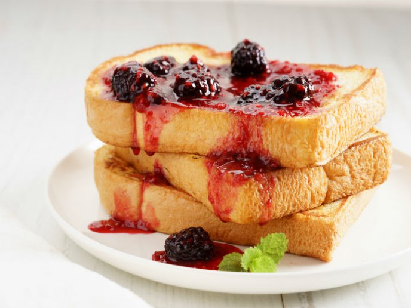

Receta Pan Francés
En esta página te explicaremos cómo hacer pan francés en tu casa

Esta receta rinde hasta nueve rebanadas de pan.
Ingredientes
- 1 taza de leche.
- 2 huevos.
- 1 cucharada de vainilla.
- Aceite.
- Pan de barra.
Pasos
- En un tazón añadir la leche, los huevos y la vainilla.
- Mezclar los ingredientes.
- Calentar los ingredientes.
- Remojar el pan en la mezcla.
- Freir el pan por ambos lados en el sartén..
- Agregar azúcar o mermelada al gusto.